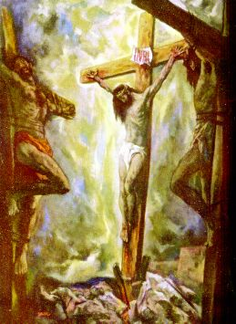

"Mas cuando vino á Jesús, como le vieron ya muerto, no le quebraron las piernas: empero uno de los soldados le abrió el costado con una lanza, y luego salió sangre y agua." (Juan 19,33-34)
=INDEX=
 |
Ésta es la Historia de Longinus, el Centurión Romano que estaba de servicio en Jerusalén, cuando JESÚS fue cobardemente llevado a la prisión, injustamente declarado culpado, cruel y bárbaramente flagelado, siendo crucificado en una Cruz entre dos ladrones.